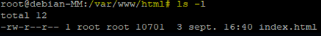

Le nano est un éditeur de texte simple et léger en ligne de commande et d'ouvrir le fichier de configuration réseau situé à l'emplacement /etc/network/interfaces.

Cette commande va permettre d'ouvrir un fichier de configuration.

vous pouvez ajouter un # au début d'une ligne, cela a pour effet de commenter cette ligne.

La ligne iface ens18 inet static dans un fichier de configuration réseau (comme /etc/network/interfaces sur Debian) spécifie qu’une interface réseau nommée ens18 doit être configurée avec une adresse IP statique.

Cette configuration est une interface réseau avec l'adresse IP 172.17.202.12/16 et la passerelle 172.17.0.254 en utilisant nano.


Cette commande cat /etc/resolv.confaffiche le contenu du fichier /etc/resolv.conf. Ce fichier est utilisé par le système pour configurer les serveurs DNS, qui traduisent les noms de domaine en adresses IP.

Grâce à la commande cat /etc/network/interfaces dans un système Debian affiche le contenu du fichier de configuration réseau /etc/network/interfaces.

La commande reboot sur Debian redémarre le système.

La commande permet de mettre à jour l'index des paquets disponibles dans les dépôts logiciels configurés.

Le systemctl status apache2 tl permet d'afficher le statut du service Apache2, le serveur web populaire sur les systèmes comme debian.


Permet de se déplacer dans un répertoire spécifique sur un serveur distant.
C'est pour Afficher une liste détaillée des fichiers et répertoires dans le répertoire courant.


Permet de lister les fichiers et répertoires d'un répertoire donné. Et voir si on a bien créé.


CPermet d'afficher une liste détaillée des fichiers et répertoires dans le répertoire courant.
- Il est spécifique aux systèmes Debian et fait partie des outils liés à Apache2, le serveur web populaire.
La commande cat 000-default.conf est utilisée pour afficher le contenu du fichier 000-default.conf, qui est un fichier de configuration d'Apache2.

La commande ls -m dans un terminal est utilisée pour lister les fichiers et répertoires dans le répertoire courant, mais avec une particularité : elle affiche les résultats sous forme de liste séparée par des virgules.

Permet de lister les fichiers et répertoires d'un répertoire donné. Et voir si on a bien créé.
puis faire un ls afin de voir si il est bien supprimer
cela va ajouter sites2
- La commande cd est utilisée dans les systèmes debian et linux pour changer le répertoire de travail courant dans le terminal.
Faire les modifications dans le nano

La commande a2dissite est utilisée dans les systèmes basés sur Apache pour désactiver une configuration de site virtuel (Virtual Host). Voici une explication de ce que signifie spécifiquement a2dissite ip_vhosts
La commande systemctl reload apache2est utilisée pour recharger la configuration du serveur web Apache2 sans redémarrer complètement le service.
La commande cat index.html dans un terminal Unix ou Linux affiche le contenu du fichier index.html dans le terminal.

La commande cd permet de changer le répertoire courant vers le répertoire /etc/apache2/sites-available/ sur un système Linux (comme Debian ), où sont stockées les configurations des sites pour le serveur web Apache2.

La commande cp ip_vhosts.conf port_vhosts.conf est utilisée pour copier un fichier sur un autre fichier ou répertoire dans un système

La commande ls -s est utilisée pour afficher la taille des fichiers et des répertoires dans le répertoire courant ou spécifié.

Veillez mettre dans l"adresse ip. Le port :8080 fait référence à un numéro de port utilisé dans les adresses URL ou les configurations réseau pour indiquer une connexion au serveur via ce port spécifique.
ls -l

cd